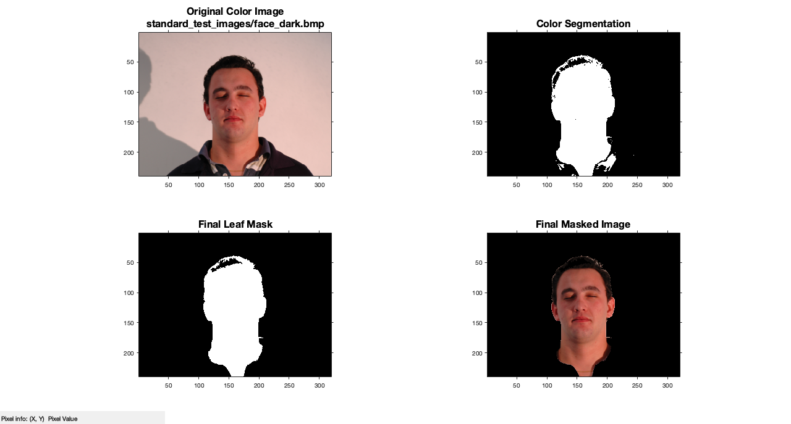

clc; % Clear the command window. close all; % Close all figures (except those of imtool.) workspace; % Make sure the workspace panel is showing. format long g; format compact; fontSize = 16; %=============================================================================== % Get the name of the image the user wants to use. baseFileName = 'standard_test_images/face_dark.bmp'; folder = pwd fullFileName = fullfile(folder, baseFileName); % Check if file exists. if ~exist(fullFileName, 'file') % The file doesn't exist -- didn't find it there in that folder. % Check the entire search path (other folders) for the file by stripping off the folder. fullFileNameOnSearchPath = baseFileName; % No path this time. if ~exist(fullFileNameOnSearchPath, 'file') % Still didn't find it. Alert user. errorMessage = sprintf('Error: %s does not exist in the search path folders.', fullFileName); uiwait(warndlg(errorMessage)); return; end end %======================================================================================= % Read in demo image. rgbImage = imread(fullFileName); % Get the dimensions of the image. [rows, columns, numberOfColorChannels] = size(rgbImage) % Display image. subplot(2, 2, 1); imshow(rgbImage, []); axis on; caption = sprintf('Original Color Image\n%s', baseFileName); title(caption, 'FontSize', fontSize, 'Interpreter', 'None'); hp = impixelinfo(); % Set up status line to see values when you mouse over the image. % Set up figure properties: % Enlarge figure to full screen. set(gcf, 'Units', 'Normalized', 'OuterPosition', [0 0.05 1 0.95]); % Get rid of tool bar and pulldown menus that are along top of figure. % set(gcf, 'Toolbar', 'none', 'Menu', 'none'); % Give a name to the title bar. set(gcf, 'Name', 'Demo by ImageAnalyst', 'NumberTitle', 'Off') drawnow; % Do color segmentation: [BW,maskedRGBImage] = createMask(rgbImage); % Display the image. subplot(2, 2, 2); imshow(BW); title('Color Segmentation', 'FontSize', fontSize, 'Interpreter', 'None'); axis on; drawnow; % Clean up by filling holes and taking the largest blob. leafMask = imfill(BW, 'holes'); leafMask = bwareafilt(leafMask, 1); % Display the image. subplot(2, 2, 3); imshow(leafMask); title('Final Leaf Mask', 'FontSize', fontSize, 'Interpreter', 'None'); axis on; drawnow; % Mask the image using bsxfun() function to multiply the mask by each channel individually. maskedRGBImage = bsxfun(@times, rgbImage, cast(leafMask, 'like', rgbImage)); % Display the image. subplot(2, 2, 4); imshow(maskedRGBImage); title('Final Masked Image', 'FontSize', fontSize, 'Interpreter', 'None'); axis on; drawnow; function [BW,maskedRGBImage] = createMask(RGB) %createMask Threshold RGB image using auto-generated code from colorThresholder app. % [BW,MASKEDRGBIMAGE] = createMask(RGB) thresholds image RGB using % auto-generated code from the colorThresholder app. The colorspace and % range for each channel of the colorspace were set within the app. The % segmentation mask is returned in BW, and a composite of the mask and % original RGB images is returned in maskedRGBImage. % Auto-generated by colorThresholder app on 05-Jun-2018 %------------------------------------------------------ % Convert RGB image to chosen color space I = rgb2hsv(RGB); % Define thresholds for channel 1 based on histogram settings channel1Min = 0.985; channel1Max = 0.460; % Define thresholds for channel 2 based on histogram settings channel2Min = 0.264; channel2Max = 1.000; % Define thresholds for channel 3 based on histogram settings channel3Min = 0.000; channel3Max = 1.000; % Create mask based on chosen histogram thresholds sliderBW = ( (I(:,:,1) >= channel1Min) | (I(:,:,1) <= channel1Max) ) & ... (I(:,:,2) >= channel2Min ) & (I(:,:,2) <= channel2Max) & ... (I(:,:,3) >= channel3Min ) & (I(:,:,3) <= channel3Max); BW = sliderBW; % Initialize output masked image based on input image. maskedRGBImage = RGB; % Set background pixels where BW is false to zero. maskedRGBImage(repmat(~BW,[1 1 3])) = 0; end
folder =
'/Users/matthewhurt/Documents/MATLAB'
rows =
240
columns =
320
numberOfColorChannels =
3
